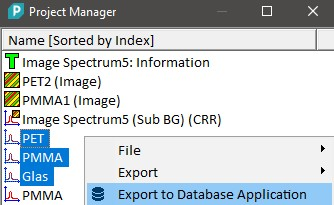
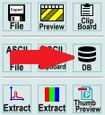
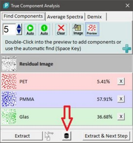

|
WITec Project中的数据库搜索
|
可以使用光谱数据库来搜索未知组分。
为此，WITec 开发了搜索软件 WITec TrueMatch。也可以使用 ACDLabs 软件。
您可以创建自己的数据库或使用商业数据库 ST Japan。
有几种方法可以将光谱导入到 WITec TrueMatch 数据库软件或 ACDLabs 中。
在使用其中一种方法之前，请确保您已配置 数据库导出选项。
项目管理器
您可以在项目管理器中选择多个单光谱数据对象，并使用 上下文菜单 "导出到数据库应用程序"：

图谱查看器
图谱查看器中所有可见的光谱都可以使用环形菜单或上下文菜单"导出 -> 导出到数据库应用程序"（快捷键 E）发送到 TrueMatch 软件：

如果使用图谱查看器 鼠标标记标记了某个区域，则只有选定区域会被发送到 TrueMatch 软件。
真组分分析
您可以使用真组分分析对话框中的数据库按钮直接将分析结果光谱导入到 TrueMatch 软件中：
